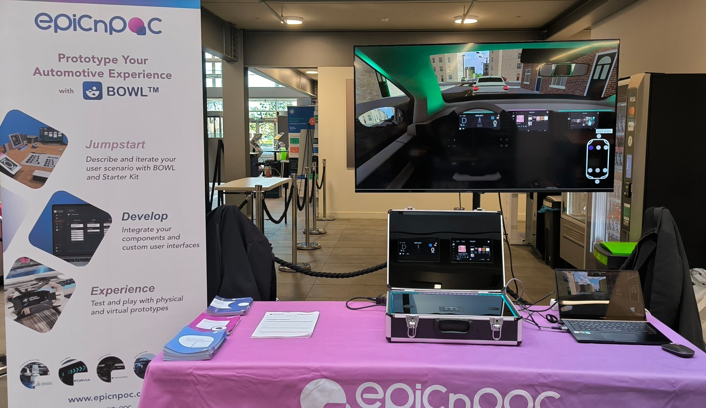
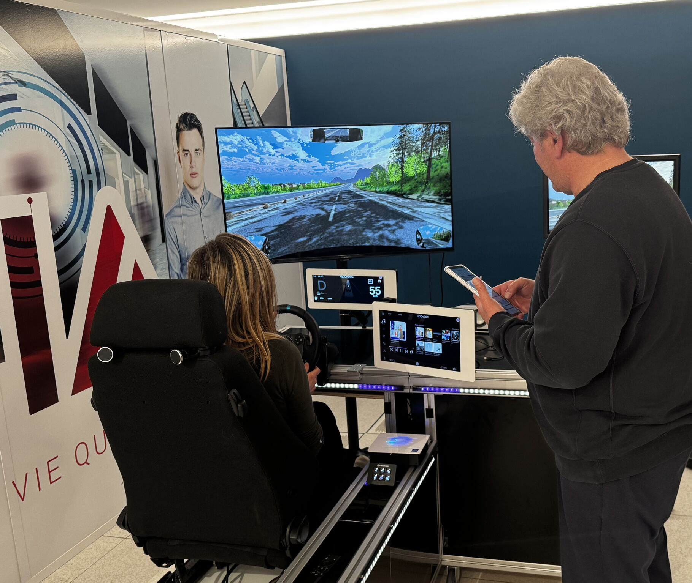

📋 Project Overview
Virtual Replica is an automotive simulator designed to visualize and test prototypes and user experiences for EPICNPOC projects in advance. This simulator, designed as a key feature, enables immersive visualization of technological innovations, effectively preparing concepts for trade show presentations.
Context: The realistic and modular automotive simulator was part of the third stage of the company's prototyping chain, according to the description on the EPICNPOC Prototyping Services website.
🎯Project Objectives
- Create a virtual replica of the car cockpit for interface project presentations
- Develop environments based on real roads using authentic GPS data
- Integrate automatic and manual driving via Logitech steering wheel/pedals or server
- Display GUI and UX developed by the company in the simulator
- Ensure smooth and fast communication between simulator and server
🔬Development Methodology
1. Resource Optimization
- Research and testing of existing Unity assets
- Time-efficient development approach
- Integration of modular components
2. Hardware Integration
- Logitech SDK implementation
- Real-time GPS data processing
- Server communication protocols
3. Testing and Validation
- Trade show preparation
- Performance optimization
- User interface validation
💻Technologies Used
Unity 3D
C# Scripting
Logitech SDK
GPS Integration
Networking
Real-time GUI
Hardware Integration
3D Modeling

📸 Virtual Cockpit Interface
High-fidelity 3D cockpit with integrated GUI displays
'">
⚡Key Features
- Realistic Cockpit: High-fidelity virtual car interior with authentic controls
- GPS-Based Routes: Real-world road environments from authentic GPS data
- Dual Control System: Manual steering wheel/pedal control or server automation
- Dynamic GUI Display: Company-developed interfaces integrated in simulator
- Real-time Communication: Fast data exchange with company servers
- Trade Show Ready: Optimized for live demonstrations and presentations
🔧Technical Challenges Overcome
- Hardware Integration: Perfect synchronization between Logitech controls and simulator
- Real GPS Processing: Converting authentic GPS coordinates to realistic road networks
- Server Communication: Low-latency networking for remote control capabilities
- Performance Optimization: Maintaining smooth frame rates with complex 3D environments
- GUI Overlay System: Flexible interface display for various prototype demonstrations

⚙️ Hardware Integration
Logitech steering wheel and pedal system integration
'">
🤝Development Context
Work completed as part of EPICNPOC prototyping services:
- Prototyping Chain: Third stage of company's development pipeline
- Trade Show Focus: Designed for professional presentation environments
- Resource Optimization: Efficient use of available development time and assets
Innovation: The simulator allows testing different concepts and prototypes in realistic virtual car environments, bridging the gap between digital prototypes and real-world user experience.
🏆 Results and Impact
✅ Successful Implementation
Delivered a fully functional automotive simulator capable of realistic cockpit simulation with GPS-based road environments and dual control systems.
✅ Hardware Integration Success
Successfully integrated Logitech steering wheel and pedal systems with Unity physics engine, providing realistic driving experience for prototype testing.
✅ Trade Show Ready
Optimized simulator performance and presentation capabilities for professional trade show environments, facilitating effective prototype demonstrations.
✅ Technological Innovation
Demonstrated ability to integrate complex technologies (3D simulation, GPS data, hardware controls, networking) into cohesive prototyping platform.
✅ Skills Developed
Advanced Unity development, hardware integration, GPS data processing, networking protocols, and trade show presentation systems.